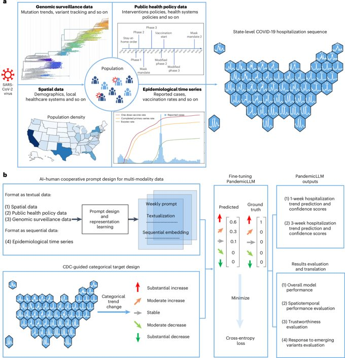
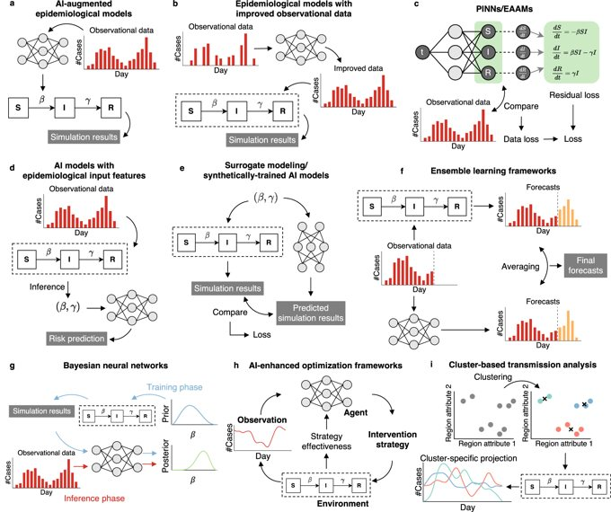
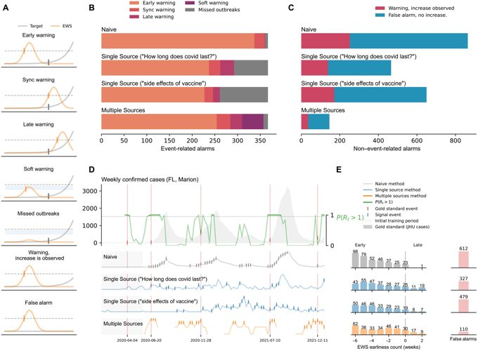
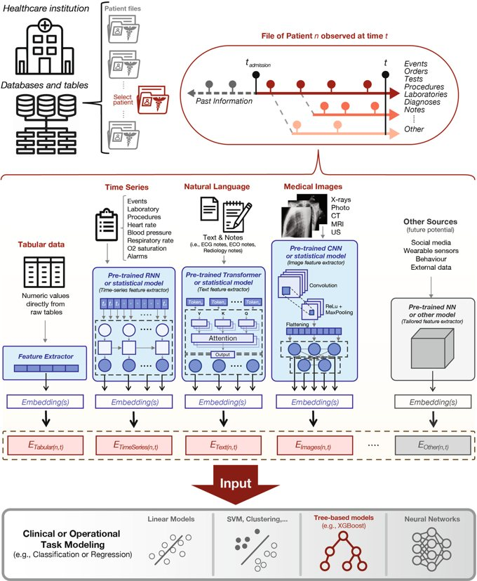
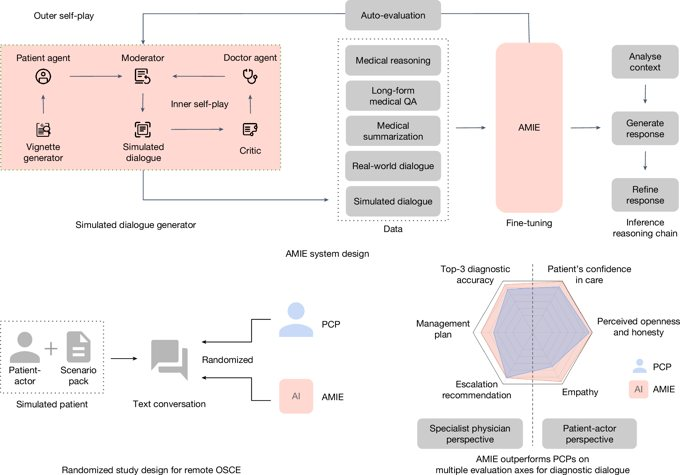
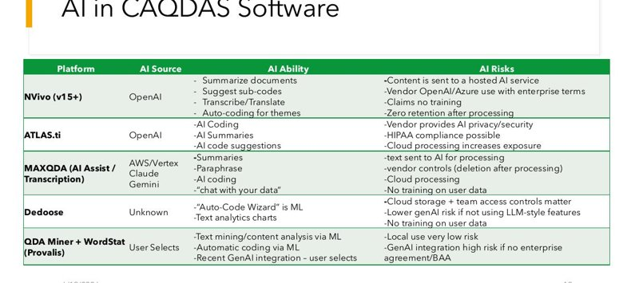

Integrating AI into Urban-Health Workflows
An Introduction to AI for Urban Health Research & Practice
Today's Lecture
Where AI is already useful across the public-health pipeline — and how to decide what to fold into your own workflow.
Learning Objectives
- Review concrete AI use cases across public-health practice.
- See how AI supports data collection, analysis, communication, and care.
- Identify practical steps to integrate AI into your own research and workflow.
- Decide what to automate and what to keep human.
- Apply these ideas to a realistic urban-health scenario in groups.
AI Across the Research Pipeline
surveys · sensors · imagery
clean · label · integrate
predict · cluster · model
brief · message · act
AI can assist at every stage — but it's most valuable where data is large, repetitive, or unstructured.
The same theme as all week: AI as a capable assistant you direct and verify, not an oracle.
Collecting & Monitoring Data
AI-Powered Data Collection
Surveys & follow-up
- Adaptive questionnaires and smart skip logic
- Automated reminders and multilingual follow-up
- Real-time coding of open-ended responses
Watch-outs
- Coverage & the digital divide
- Consent for continuous collection
- Bias in who responds and how
Satellite & Street Imagery

Land use change
Urban growth, informal settlements.
Air quality
Satellite + ground sensors combined.
Heat & green space
Heat islands, vegetation, access equity.
Virtual audits
Built-environment from street imagery.
Wearables, Smartphones & IoT
What they enable
- Continuous heart rate, sleep, activity, glucose
- Predictive analytics & early detection
- Population mobility and behavior signals
Equity & ethics
- Privacy-preserving methods (federated, on-device)
- Calibration vs. clinical gold standards
- Access gaps — who owns a device?
Wearable medical-device market: ~$35B (2023), projected ~$150B by 2029 — but representativeness remains a real concern.
Analysis & Forecasting
Predictive Modeling for Disease Forecasting

Capabilities
- Real-time surveillance with greater precision
- Multi-source integration: EHRs, environment, mobility
- Early-warning & resource allocation
Urban-specific factors
- Density & transport; social networks; built environment
- Neighborhood-level disparities
Finding Clusters & Disparities

Unsupervised clustering
Group outcomes geographically without predefined categories.
Spatial analysis
Hot-spots, spatial autocorrelation, temporal trends.
Equity lens
Identify vulnerable populations for targeting.
Outbreak Detection & Response

How AI helps
- Early-warning from climate, travel, vector data
- Integrate social media, travel, health records
- Optimize hospital capacity and supplies
Case examples
- Zika, Brazil 2016 · COVID-19 hotspots · Ebola, West Africa
Communication & Care
AI for Public-Health Communication

Tailored messaging
Behavioral targeting, timing, cultural & language adaptation.
Chatbots & triage
24/7 info, routing to care, multilingual support.
Emergencies
Multilingual alerts; correcting misinformation.
Powerful reach — but health messaging and chatbots need careful evaluation and oversight (Day 3's lesson).
AI in Healthcare Settings

Diagnostics
Specialist-level screening, fewer errors, broader access.
Drug discovery
Faster target ID; shorter timelines.
Personalized medicine
Genetic + lifestyle data; inequity risk if data lacks diversity.
Health systems
Forecast admissions, staffing, capacity.
Into Your Workflow
Where AI Fits in a Typical Week
| Task area | Example tools | Sample use |
|---|---|---|
| Email & writing | Copilot, ChatGPT, Claude | Draft replies; summarize & translate threads |
| Reports & summaries | Claude, custom GPTs, Elicit | Turn a surveillance report into a 2-page policy memo |
| Meetings | Otter, Fireflies, Teams/Zoom Copilot | Summarize and extract action items |
| Community interaction | Chatbots, translation | Multilingual FAQ for a screening program |
| Project management | Notion AI, Asana add-ons | Build a mobile-clinic timeline with risk points |
| Analysis & coding | Claude Code, R/Python copilots | Segment neighborhoods by vulnerability score |
What to Automate vs. Keep Human
Good to delegate
- First drafts & summaries
- Reformatting, translation, transcription
- Repetitive coding & data cleaning
- Literature triage
Keep human
- Final interpretation & conclusions
- Ethical and equity judgments
- Community relationships & trust
- Anything with protected data or high stakes
Ask yourself: what do I want to spend my time on — and how much am I willing to depend on AI for the rest?
Mollick's Four Rules of Co-Intelligence
1 · Invite AI to the table
Use it as a thought partner from the start — not only when stuck.
2 · Be the human in the loop
Guide, critique, and verify every output.
3 · Treat it like a person
Give context and follow-ups; collaborate, don't command.
4 · Assume it's trying to help
If output is off, refine your instructions — like coaching an eager intern.
Examples from Pedestrian Safety & the Built Environment

Crash & injury analysis
Large crash datasets (e.g., Bogotá) analyzed with ML to profile risk by location, vehicle, and victim — and to build interactive explorers.
Built-environment audits at scale
Street-level and satellite imagery scored automatically instead of by hand — covering whole cities.
Climate & health, Bogotá & Barranquilla
Multi-source project combining satellite, cohort, and community data (more on Day 5).
Your Turn: Urban-Health Scenarios
AI in Qualitative-Analysis Software

- Auto-coding, summaries, transcription, and "chat with your data" are now native to major CAQDAS tools.
- Check each vendor's data handling — cloud vs. local, HIPAA terms, whether your text trains their model.
- Keep researcher judgment over the codebook; treat AI codes as suggestions.
Pick a Scenario
Heat & vulnerability
Target a heat-wave response to the most vulnerable neighborhoods.
Pedestrian safety
Prioritize crossings for safety upgrades across a city.
Screening outreach
Boost uptake of a community screening program.
Each scenario has data, communication, and equity dimensions — exactly where today's use cases apply.
Group Work Instructions
In your group (30 min)
- Map the workflow: collect → process → analyze → communicate
- At each stage, name where AI helps and which tool
- Flag what must stay human and why
- Note one equity or privacy risk and a mitigation
Report back (5 min each)
- Your chosen scenario and workflow
- The single highest-value AI step
- Your biggest "keep human" decision
Use any of the tools from this week; try at least one you haven't used before.
Three Research-Workflow Demos to Try
Concrete ways to put agentic AI to work in your own research — try one, or watch the live demo.
Teach it your voice
Give the model a few of your own writing samples and have it draft in your style — an abstract, an email, a grant aim. You edit; it learns the pattern.
CV → website
Hand an agent your CV and ask it to build a simple academic site — structure, pages, and styling — then refine it by conversation.
Live research brainstorm
Talk through a study idea with the model as a thinking partner: rival hypotheses, confounders, designs, and what would falsify it.
Free tiers handle the chat-based versions; the file-building (CV→website) agent demo will be shown live by the instructor.